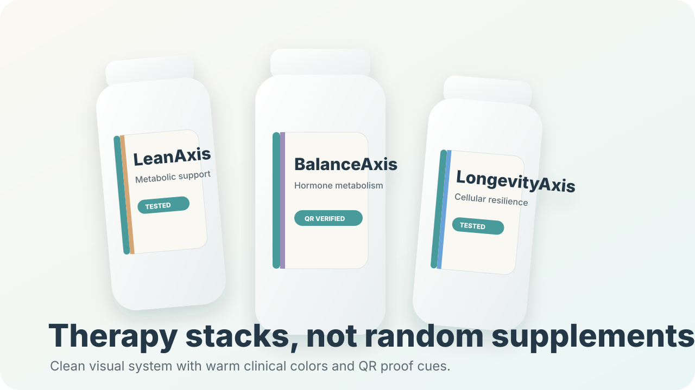

Our Science
NutraAxis organizes nutritional support around the body's key wellness systems — hormonal, metabolic, cellular, neurological, cardiovascular, and digestive — using ingredients selected for their quality, bioavailability, and scientific rationale.


Evidence-informed formulation
Every NutraAxis product starts with a straightforward question: what wellness system needs support, and what does the research say? From there, ingredients are selected for their form, absorption characteristics, nutritional rationale, and how they work alongside other supplements.
How the science flows
Practitioner-guided wellness goals inform which body systems and nutritional areas to prioritize.
Wellness goals are mapped to relevant body systems, and published nutritional research is reviewed for each area of support.
Ingredients and forms are selected based on their nutritional research and quality profile for each area of support.
Products are organized into practical wellness formulations aligned with each product pillar.
A supplement approach can be revisited over time as wellness goals and practitioner guidance evolve.
Core wellness areas
Support for healthy hormonal balance, methylation, and daily nutritional foundations associated with hormonal wellness.
Support for healthy body composition, digestive comfort, gut-barrier function, and healthy metabolic balance.
Support for cellular resilience, antioxidant balance, and energy production pathways.
Support for relaxation, mental clarity, and restful sleep routines.
Support for healthy circulation, heart health nutritional needs, and overall cardiovascular wellness.
Support for cellular health, antioxidant pathways, and proactive healthy aging routines.
Examples of evidence-informed copy
DIM, methylated cofactors, iodine, selenium, and omega-3s are included to support nutritional needs associated with hormonal wellness and daily nutritional foundations.
HMB, targeted probiotics, berberine, and chromium are included to support healthy body composition, digestive comfort, and metabolic wellness routines.
NAD+ precursors, polyphenols, CoQ10, PQQ, and antioxidants are included to support cellular energy and healthy aging pathways.
L-theanine, rhodiola, phosphatidylserine, and magnesium glycinate are included to support relaxation, mental clarity, and restful sleep routines.
Every NutraAxis formulation is built on published nutritional research, quality-focused manufacturing, and transparent standards — so practitioners and individuals can make informed wellness decisions with confidence.